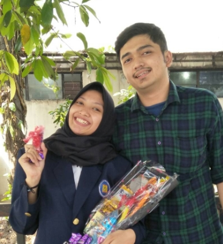

Sejak pertemuan itu, rasanya hari-hari menjadi berwarna.
Canda, tawa, rencana, perselisihan, dan sesekali amarah.
Namun yang terpenting, tak ada kata menyerah.
-
29
Dec
2016Rasa itu Tumbuh
Setelah surprise yang kamu berikan, aku tak bisa lagi menganggapmu hanya teman biasa. Sejak malam ini, aku yakin untuk membuka lembaran baru dan meyakinkan hati untukmu
-
24
May
2017Jawaban yang Dinanti
5 bulan berlalu dan aku siap menyatakan padamu. Tepat sebelum tanjakan menuju rumahmu, pertanyaan itu dijawab olehmu. Jawaban yang membuatku tersenyum, begitupun kamu. Menjadi kita.
-
21
Jun
2017Buka Berdua
Aku baru bisa mewujudkan keinginanmu agar kita buka bersama pada hari ini. Dan Taman Jajan Bintaro menjadi tempat "kencan pertama" kita. Malam ini juga menjadi momen pertemuan pertamaku dengan mamamu.
-
28
Aug
2017Tangis itu...
× ×
×Aku melihat tangisan pertamamu malam ini. Bukan karena kita bertengkar, tapi karena kamu merasa tak mampu melalui ujian. Namun aku senang, karena di pagi harinya, aku kembali melihat wajahmu dengan senyuman. Lalu berhasil lulus ujian yang kamu takutkan.
-
27 - 29
Nov
2017Jatuh Kesekian Kali
××Hari ini ada yang berbeda darimu, pakaian yang kamu kenakan dan rias wajah yang membuatmu menawan. Kulihat kamu telah siap menjadi MC di event organisasimu. Ketika acara dimulai dan kamu mulai bicara, rasanya aku kembali jatuh hati untuk kesekian kali.
-
Dec - Jan
2018Our Birthday
××Momen pertama ulang tahun yang kita lalui bersama. Aku lebih dulu bertambah usia, lalu kamu 4 hari setelahnya. Tak ada perayaan berlebihan, sebab menghabiskan waktu seharian denganmu rasanya jauh lebih istimewa.
-
Feb - Mar
2018Mengenal Lebih Jauh
××Selama 2 bulan, ada dua acara yang membuat kamu lebih mengenal keluargaku. Pertama, lamaran kakakku dan sebulan kemudian adalah pernikahannya. Aku senang melalui dua acara itu dengan kehadiranmu. Tapi aku jauh lebih senang melihatmu bisa dekat dengan keluargaku.
-
18
Jul
2018KKP
×Proses empat bulan yang kita lakukan akhirnya berakhir dengan senyuman. Sidang KKP yang kita takutkan ternyata mudah dilalui jika bersama. Dan yang lebih membuatku bangga, kamu tak kalah dengan tekanan sidang kedua. Nilai 'A' yang kamu dapat adalah buktinya. Kamu memang selalu memberi kejutan.
-
Aug
2018Proses Dewasa
 ××
××Bulan ini diawali dengan amarah yang saling meluap di antara kita. Rasa capek yang melanda akhirnya membuat malam yang seharusnya tenang menjadi sirna. Tapi sekali lagi, kita berhasil melalui proses pendewasaan ini. Bahkan beberapa hari setelahnya, kita mampu berjalan 2,6 km menuju Curug Cibereum bersama-sama.
-
Dec - Jan
2019Another Birthday
××Tahun kedua kita melalui ulang tahun bersama. Sama seperti tahun sebelumnya, kita memilih untuk menghabiskan waktu dengan seharian memutari Jakarta. Berusaha Mencari boneka dan berakhir dengan photobooth berdua.
-
Feb - Mar
2019Sebulan Penuh
××Salah satu momen yang memberi banyak pelajaran buat kita. Satu bulan penuh kita lalui bersama di sebuah desa bernama Batujaya. Lucunya, sebulan bersamamu sama sekali tak menimbulkan bosan. Malah rasanya membuat ketagihan.
-
22
Jun
2019Mengenal Lebih Jauh Lagi
×Setelah kamu tahun lalu, kini giliran aku yang mengenal lebih jauh keluargamu. Ini memang bukan kali pertama aku bertemu, tapi kali ini rasanya lebih membuat jantung berdebar karena aku bertemu keluarga besarmu. Seharian penuh.
-
22
Jul
2019Satu Target Selesai
×Step terakhir selama empat tahun akhirnya berhasil kita lalui pada hari yang sama dan nilai yang sama, Uniknya, dospem kamu adalah pengujiku. Lalu dia sadar bahwa kita bukanlah sebatas teman.
-
Oct
2019Dari Infus Jadi Toga
××Awal bulan ini, ada sedih yang timbul di hati. Melihatmu terbaring dengan infus di tanganmu membuatku tak tenang. Aku bersyukur seminggu kemudian kamu dibolehkan pulang. Dan infus itu berganti menjadi toga di akhir bulan saat kita wisuda bersamaan. Satu target lagi telah kita capai, banyak target lainnya sudah menunggu untuk kita taklukan.
-
14
Nov
2019Tak Mau Kalah
×Malam ini amarah kembali menghampiri kita. Namun dengan tingkat yang jauh lebih besar dari yang pernah kita alami sebelumnya. Penyebabnya adalah kamu yang berpikir 'A' sedangkan aku berpikir sebaliknya. Tapi lagi-lagi kita tak mau kalah dengan amarah yang melanda. Dan kembali membaik dua hari setelahnya.
-
Dec - Jan
2020Ulang Tahun Lagi
Tahun ini berbeda dibanding sebelumnya. Ulang tahun kita hanya dihabiskan dengan makan-makan dan mencari kado yang tak kunjung ditemukan hingga H+3 hari ulang tahunmu. Namun, pergantian tahun kita lewati dengan penuh kesenangan. Sebelum akhirnya ada kabar bahwa ijazahku luntur terendam banjir yang datang.
-
24
May
2020Awal Tahun Keempat
Hari ini tepat 3 tahun sudah kita bersama. Aku sengaja tidak menaruh tanggal 24 Mei di loveline ini. Karena aku sadar tahun sebelumnya aku memang tak pernah memberimu apa-apa. Dan kali ini, aku harap hadiahku bisa membuatmu melihat kembali yang sudah kita alami. Dari naik dan turun yang sudah kita lalui berkali-kali. Sampai pencapaian yang sudah kita raih sampai saat ini. Sehingga hal-hal tadi bisa menjadi pengingat dan penguat dalam hubungan ini. Dan bertahan hingga tua nanti.
-
Loading